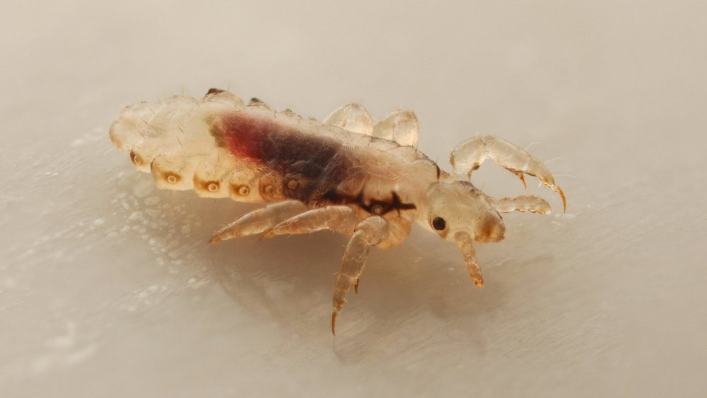
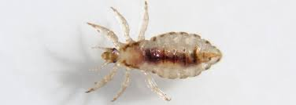

Description
Les poux sont de petits insectes parasites qui vivent sur le cuir chevelu et se nourrissent de sang. Ils sont très contagieux et peuvent se propager rapidement d'une personne à une autre. Les symptômes les plus courants de l'infestation par les poux sont les démangeaisons, les rougeurs et les petites taches noires sur le cuir chevelu.
Traitement
Il existe plusieurs traitements efficaces pour se débarrasser des poux, tels que les shampoings et les lotions spéciales. Il est important de suivre les instructions du produit choisi et de l'utiliser régulièrement pour éliminer complètement les poux et leurs œufs.
Prévention
La meilleure façon de prévenir l'infestation par les poux est de ne pas partager les objets personnels tels que les brosses à cheveux, les peignes et les bonnets. Il est également important de se laver les cheveux régulièrement et de vérifier régulièrement les membres de la famille pour détecter toute infestation précoce.
